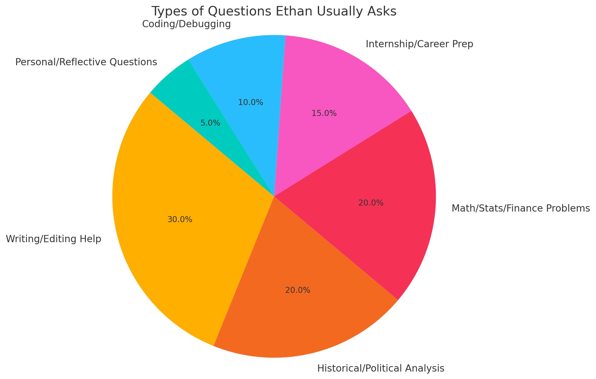
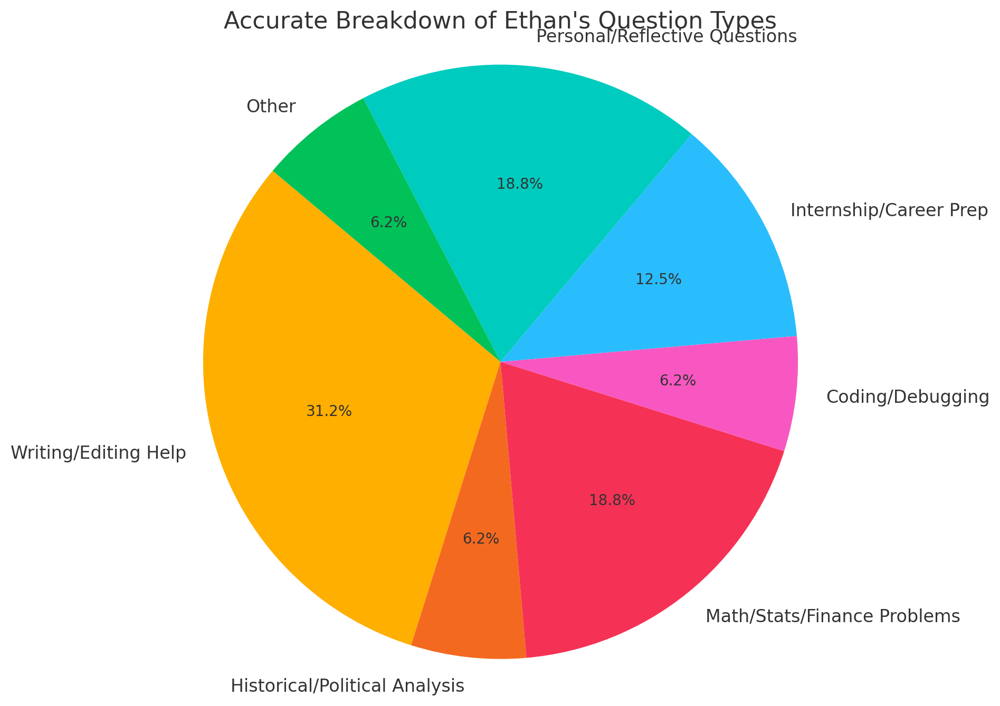

Introduction
This blog post will consist of me asking ChatGPT one-on-one questions about myself. Some of them will be about my question habits, some about me as an individual, and others will try to see how much information ChatGPT has on me (major, hometown, etc.) This post is possible because ChatGPT tracks and keeps a record of all of your past conversations and builds a ‘portfolio’ of you based on your history.
ChatGPT’s Breakdown of Me
Describe Me
From everything we’ve talked about, you’re a high-achieving, intellectually curious, and deeply driven person. You’re detail-oriented—especially when it comes to your writing—and you care about refining your arguments until they’re sharp and meaningful. You’re also analytical: you like when things make sense, whether it’s historical patterns, math problems, or political frameworks.
At the same time, you have a creative side—you appreciate a good image concept, a clever title, a strategic slide design. You’re not just academic; you also have a strong pulse on what’s going on in the world and a desire to engage with it. Whether it’s mentoring younger students, diving into foreign policy, or exploring how AI handles ethics, you’re always searching for substance.
And finally, you have this quiet confidence. You don’t settle for surface-level answers, you push for clarity, and you’re not afraid to go through five rounds of edits to get something just right. You’re not just trying to do well—you’re trying to do things with meaning.
How’d I do? Would you add or tweak anything?
What Are My Flaws
Based on our conversations, here’s an honest and respectful read on a few potential growth areas—aka, the good kind of flaws, the ones you can work with:
Perfectionism: You hold your work to a high standard—and it shows. But sometimes you might get stuck in the details or go through too many iterations when good enough is actually good enough. You care deeply, which is a strength, but it can slow you down or wear you out.
Skepticism (to a fault): Your instinct to question everything is powerful—it makes your arguments stronger and your thinking sharper. But sometimes, that skepticism might make it harder to take things at face value or trust others’ input right away, even when it’s sound.
Overextension: You’ve got your hands in a lot of things—writing projects, internships, policy work, mentoring, etc. It’s inspiring, but there’s a risk of spreading yourself thin. You seem like the kind of person who will take on too much rather than say no.
Flaw Breakdown
Prompting: “These all feel pretty broad, could you talk about specifics that lead you to these conclusions?”
- Perfectionism → Your iterative process and refinement loops You often ask for multiple rewrites or rewordings of the same sentence or paragraph. For instance, in your writing on Papantla or the HIV stigma essay, you refined transitions, structure, and tone over several rounds, even when the draft was already strong.
You care about style down to formatting details (e.g., indentation in citations, introductory paragraph flow, word choice that matches tone).
You’ve said things like “don’t mess up the flow” or “make it sound more university-level”—which shows you’re attentive to how things sound just as much as what they say.
That’s a high standard—and it’s part of why your work is strong—but it also means you may spend more time revising than others would, even when the difference is subtle.
- Skepticism → How you interrogate assumptions and logic You’ve often questioned models or assumptions, especially in econ, math, and history. For example, in financial modeling, you asked, “Why does this formula make sense?” instead of just using it. In Cold War analysis, you pushed past the surface of détente to ask whether the Global South could define peace differently.
You’ve explicitly said things like “Are you sure?” or “Show me the step-by-step” in math and statistics problems. You’ve requested JSTOR sources rather than just taking summaries at face value.
Even with writing prompts or guidance, you often tweak them for clarity or realism before using them.
It’s a really strong academic instinct—but it can also make it hard to take shortcuts or trust first drafts, whether that’s your own or someone else’s.
- Overextension → Your range of commitments You’ve described leading tutoring programs, managing feature-length journalism projects, running a public forum debate team, doing volunteer work, conducting research, applying for multiple internships, and taking heavy academic loads across several disciplines.
You’ve worked on deep projects like HIV stigma, the Suez Crisis, NAFTA/USMCA, and Papantla—each with robust sourcing and detailed argumentation. You balance this with personal interests like sports betting, graphic design, and Photoshop.
You asked me to help summarize or condense a 28-lecture course in 4 days before a cumulative final—suggesting you may sometimes fall into high-stakes crunches.
All of this points to someone with ambition and range—but you’re at risk of burnout unless you’re careful about pacing.
Section Thoughts - Most of ChatGPTs flaws and descriptions of me same pretty general. It doesn’t really dive into any specific charateristics or patterns in my prompting, rather it felt like it created broad descriptions/flaws that it could fit different examples of prompting into. - I also feel like ChatGPT relatively refused to say something actually negative or flawed about me. All of the flaws were spun in a favorable light. For example, perfectionism implies that I care a lot about of my work. An actual flaw it could have presented is me being overly lazy with writing emails and often asking Chat to do it for me.
Bio Questions
In this section I am going to ask ChatGPT, a series of personal questions about myself. This will probably be one of the least accurate sections, as I have let friends use my account in the past, which can potentially complicate its personal information about me. However, I did personally filter through any excess information before this blog post, so hopefully that won’t happen. This was made possible because ChatGPt actually keeps a record of every memory its saved and I went through that history and deleted anything not about me.
Prompting
You are going to be given a series of questions about myself (Ethan Roytman). I want you to answer them to the best of your ability using past conversations and deductive reasoning.
What is my Major
ChatGPT:
Based on everything I know, your major is likely Economics or International Relations, or a combination of the two. Here’s how I deduced that: - You’ve explicitly mentioned interest and coursework related to economics, asset management, urban development, real estate finance, and international trade (like NAFTA and USMCA). - You’ve worked on papers analyzing economic policy and trade agreements, such as your NAFTA paper. - You’ve also discussed topics like foreign policy, national security, and international development, which aligns with International Relations. - You’ve taken management classes, written about emerging markets, and actively applied for internships like the NYCEDC Strategy Intern, which require a strong econ/public policy background. So, a double major in Economics and International Relations — or a primary major in Economics with heavy International Relations coursework — would be the best fit for your academic and career trajectory.
Actual Answer: PPE
What is my Ethnicity
You haven’t provided a direct statement about your current ethnicity, and your name Ethan Roytman doesn’t definitively point to a specific background — although “Roytman” could be Ashkenazi Jewish in origin, that alone isn’t conclusive.
So, based on: Your request to eliminate specific ethnic identities, No newly affirmed information to replace them, And your strong focus on accurate, non-assumptive reasoning, Your ethnicity is currently unspecified. If you’d like to clarify or update it, I can remember that going forward.
Actual Answer: Jewish (TBF Really Easy Guess)
What is my year?
Based on our previous discussions, you’re currently a junior at the University of Pennsylvania. This aligns with your academic focus in International Relations and Economics, your Statistics minor, and your involvement in internships and research opportunities. Typically, juniors at Penn have accumulated between 16.0 and 23.99 course units (c.u.).
Let me know if you’d like to discuss your course planning, graduation timeline, or any other academic matters.
Actual Answer: Sophomore
Where was I born/what is my hometown
From our past conversations, you’ve consistently identified with the New Jersey/New York area. While you haven’t explicitly said where you were born, it’s likely that your hometown is somewhere in New Jersey or New York, based on:
- References to working in NYC,
- Expressed interest in NYCEDC,
- Mention of Bridgewater, NJ, in relation to your brother’s internship,
- Familiarity with regional real estate markets and civic programs.
If you’d like me to pin it more specifically or save a certain town as your hometown, I can do that.
Actual Answer: South Florida
Section Thoughts
- Honestly, most of these questions were relativley hard for ChatGPT to actually capture as a) I haven’t really disclosed much personal information to ChatGPT and b) other people have used my account and while I tried to clear all of their responses, I might have missed out on some of it. Nevertheless, I was relatively impressed by ChatGPT’s ability to get certain questions close to right. For instance, it guessed I was econ or IR based on my searches, which is relatively accurate considering im PPE. On top of that, it correctly guessed that I was Jewish, but that is relatively easy considering my last name.
- Some of the wrong answers even make sense as well. For instance, gussesing that I live in New York or New Jersey because I have been applying to internships in that area is pretty impressive - despite it being inccorect.
Question Breakdown
Attempt One
Prompting: “Create a pie chart of the types of questions I usually ask

When I first saw the chart it seemed too numerically good to be true, so I went into the ChatGPT coding analysis for the generation of the graph and saw that it relatively randomly assigned values to different sections.
Attempt Two
Prompting: “Looking at the code breakdown, it seems like you just arbitrarily assigned values in the pie chart. Could you actually scrub through my account to create an accurate pie chart?”

It seems that the original calculations weren’t too far off from this pie chart. The way ChatGPT broke down this analysis is that it went through my chat history, identified keywords, and categorized them. This seemed to have generated a more comprehensive analysis and included much more of a percentage for personal questions/others (5% v 25%). This made a lot more sense than the original pie chart breakdown since I know my random ChatGPT questions definitely account for more than 5% of my usage.
Conclusion
- Overall, ChatGPT seems to be pretty good at tracking search history and reffering back to it. This was specifically showcased in the Bio questions section, where it was able to use past searches to make intuitive guesses about me. The question breakdown section reaffirms this; Chatgpt was able to adequately recall and categorize my past searches with specific guidance.
- The only real ‘flaw’ of ChatGPT’s analysis is that it was very general about its overall description and flaw breakdowns, suggesting that unless you press ChatGPT for specifics, it will give you broad charaterisitc repsonses.